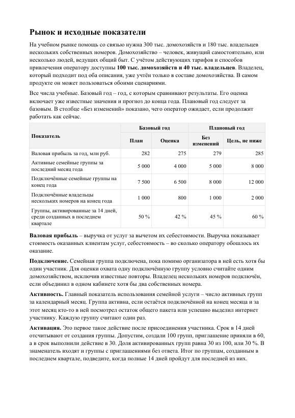
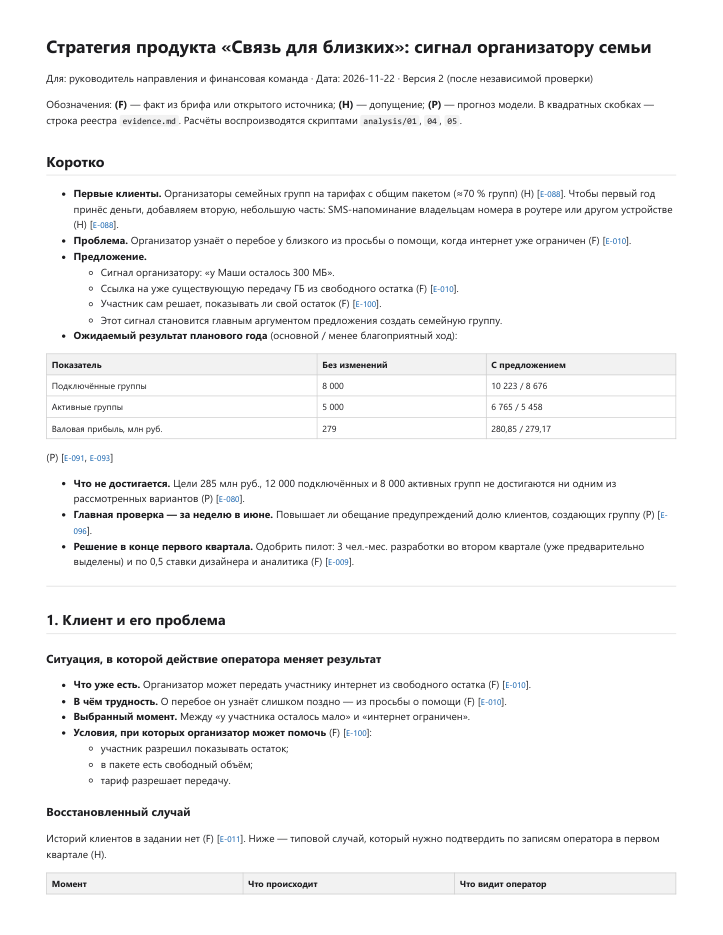
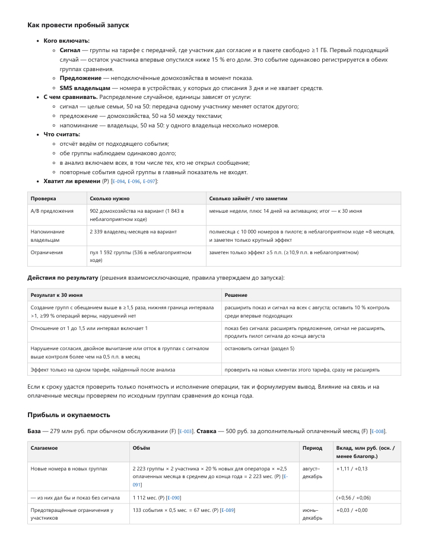
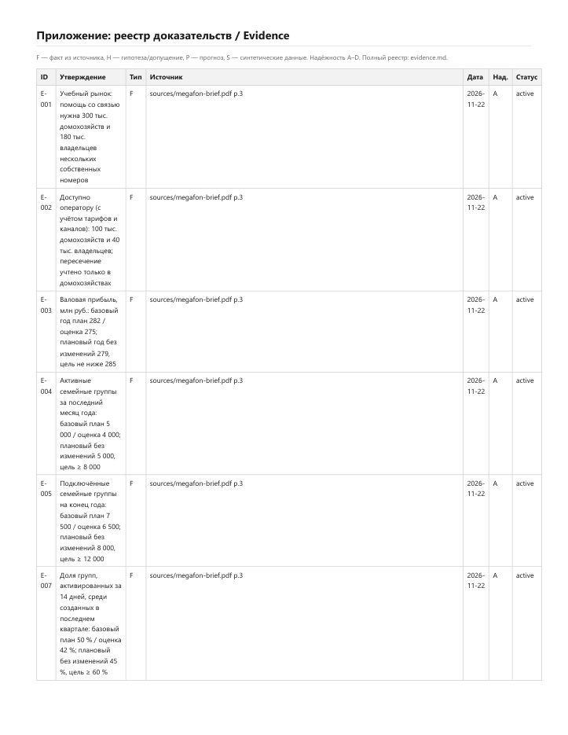
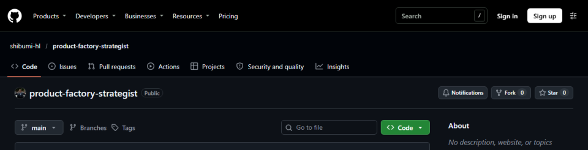

Кейс: MegaFon Product Factory, «Product Factory Strategist» · Репозиторий: github.com/shibumi-hl/product-factory-strategist · Демонстрационный проект: projects/family-connect (бриф MegaFon «Связь для близких и собственных устройств») · Дата: ноябрь 2026
Product Factory Strategist — это папка-репозиторий для Claude Code (и Cursor), а не отдельное приложение. В ней лежат постоянные инструкции, 14 навыков, 3 субагента, 4 хука, методическая база и 8 скриптов командной строки. Руководитель продукта открывает папку, формулирует задачу обычным текстом — агент проводит её от неясного запроса до продуктовой и коммуникационной стратегии с планом проверки, а после решения фиксирует ответственных, метрики и условия пересмотра.
Главная идея — проверяемость. Каждое значимое утверждение ссылается на строку реестра доказательств и помечено как факт (F), допущение (H), прогноз (P) или синтетические данные (S). Скрипт check.py механически проверяет эти правила, а «слепой» рецензент, не видевший диалога, ищет ошибки до того, как руководитель примет решение.
| Результат | Значение |
|---|---|
| Демонстрационный проект по брифу MegaFon | пройден целиком за 43 мин (10:15–10:58), 4 решения руководителя, $9,65 из бюджета $10 |
| Реестр доказательств демо | 99 строк, проверка check.py: 0 ошибок |
| Независимое ревью | 11 замечаний, 3 из них изменили рекомендацию до её утверждения |
| Сравнение с обычным чатом | близкая рекомендация, но обычный чат повторил 2 существенные ошибки и не дал ни одного источника |
| Продолжение после перерыва | новый чат без памяти продолжил работу с сохранённого состояния, ничего не повторив (проверено) |
Оркестратор (навык strategist) при каждом обращении читает state.md, определяет этап и глубину работы и вызывает навык этапа. Между этапами без гейта он не останавливается; на гейте — останавливается и ждёт руководителя.
| Этап | Навык | Что происходит | Гейт |
|---|---|---|---|
| Постановка | frame | читает материалы, сам находит то, что можно найти, задаёт пронумерованные вопросы с ответом по умолчанию, проверяет исходные посылки | подтверждение брифа |
| План исследования | research-plan | только вопросы, ответ на которые может изменить решение; у каждого — какой вариант он может «убить» | — |
| Сбор и анализ | collect, analyze-data, interviews, ux-audit | чтение источников субагентами, реестр доказательств, воспроизводимые расчёты в analysis/ | — |
| Варианты | options + red-team | ≥3 разных варианта, всегда «оставить как есть» и «закрыть»; сильнейший контраргумент к каждому; слепое ревью моделей до показа руководителю | выбор варианта |
| Стратегия | strategy + red-team | продуктовая и коммуникационная стратегия, план проверки, таблица «обещание ↔ возможность продукта»; документ в структуре брифа; экспорт в PDF | утверждение |
| Решение | decision-log | ответственный, метрики, обязательства, условия пересмотра, на каких доказательствах держится | ответственный |
| После решения | reassess, retro | новые данные → какие выводы затронуты; итоги, стоимость, сравнение с базовым подходом | по ситуации |
Навык checkpoint сохраняет состояние после каждого этапа. Руководитель в любой момент может сказать «стоп», «уточню задачу» или «измени X» — агент сохраняет состояние и следует новой инструкции.
| Компонент | Состав | Назначение |
|---|---|---|
Навыки (.claude/skills) | 14: strategist, frame, research-plan, collect, analyze-data, interviews, ux-audit, options, strategy, red-team, decision-log, reassess, checkpoint, retro | переиспользуемые процедуры, по одной на этап |
Субагенты (.claude/agents) | researcher (Haiku), red-team (Opus), respondent (Sonnet) | тяжёлое чтение, независимая проверка, имитация респондентов — в отдельном контексте |
Хуки (.claude/settings.json) | SessionStart, UserPromptSubmit, PreToolUse, Stop | восстановление состояния, контроль бюджета, защита исходных материалов и секретов, учёт стоимости |
Скрипты (scripts/) | new_project, status, check, export, extract_pdf, log, cost, guard + run.sh | создание проекта, прогресс, детерминированная проверка, экспорт в PDF, журнал, стоимость |
Методическая база (knowledge/methods) | доказательства, варианты, продуктовая и коммуникационная стратегия, проверка, данные, интервью, UX, базовое сравнение | правила, к которым навыки обращаются по ссылке |
researcher; обратно возвращаются только строки реестра.red-team получает только файлы, без диалога, чтобы не унаследовать рамку автора.state.md (этап, следующий шаг, неизвестное, оставшаяся работа с пометкой, как это известно) и log.md с отметками времени. Хук SessionStart показывает состояние в начале любого нового чата.knowledge/methods и читаются только когда нужны.evidence.md — единственное место для фактов: утверждение, тип F/H/P/S, источник (URL, файл со страницей или скрипт расчёта), дата, надёжность A–D, статус.state.md и decisions.md нельзя указывать как источник — check.py выдаёт ошибку.superseded by … или withdrawn: причина с датой. check.py --impact показывает все выводы и решения, которые на неё опираются.Depends on), поэтому изменение одного факта прослеживается до решения.| Что | Для чего | Обязательно? |
|---|---|---|
| Claude Code 2.1 (desktop, CLI или расширение IDE) | среда выполнения агента: навыки, субагенты, хуки | да (или Cursor) |
Claude Opus 5.5 (claude-opus-5-5) | оркестратор, варианты, стратегия, слепое ревью; $4 / $20 за 1 млн токенов | да |
Claude Haiku 5.5 (claude-haiku-5-5) | субагент researcher: чтение источников, извлечение строк; $0,10 / $0,50 | да |
Claude Sonnet 5.5 (claude-sonnet-5-5) | субагент respondent: имитация респондентов; $2 / $10 | только для интервью |
| WebSearch / WebFetch (встроены в Claude Code) | поиск и чтение публичных источников | да, для публичных данных |
| Python 3.9+ (стандартная библиотека) | все скрипты: проверка, стоимость, экспорт, расчёты | да |
| pypdf или PyMuPDF | извлечение текста из PDF-источников | нет |
| Microsoft Edge или Google Chrome | экспорт документа в PDF (без браузера — HTML для печати) | нет |
| Git и Git Bash | хранение и перенос проекта; запуск хуков в Windows | да |
| Cursor | альтернативная среда (.cursor/rules) — хуки запускаются вручную | нет |
Других платных сервисов нет; секреты и ключи в репозитории не хранятся. Цены — из config/pricing.json (тарифы Anthropic API на 03.11.2026).
Репозиторий создан в Claude Code (Opus 5.5) по следующим запросам команды; полный ход работы — в истории сессии.
| Запрос команды | Что сделано |
|---|---|
| «read carefully case description. github.com/obra/superpowers / github.com/mattpocock/skills / github.com/garrytan/gstack — analyze these skills and update it to the case.» | прочитан кейс; три библиотеки навыков разобраны; их механизмы перенесены с программирования на продуктовую стратегию; написан весь репозиторий и docs/skills-adaptation.md |
| «Yes, run a test» | сквозной тест на собственной задаче (travel-esim) свежими субагентами, включая перерыв и пересмотр по новым данным; найденные 12 недочётов исправлены |
| «Yes, test hooks» | отдельная сессия Claude Code в папке репозитория: проверены все хуки и маршрутизация на Haiku |
| «here is the brief» + выбор «руководитель продукта — я» | демо-проект по брифу MegaFon в отдельной сессии; руководитель отвечал на все гейты |
| «Yes, all of it» (план доработок) | ревью до выбора варианта, контроль бюджета, экспорт в PDF, перезапуск расчётов в проверке, извлечение PDF |
Что заимствовано из каждой библиотеки и почему — в docs/skills-adaptation.md. Кратко: из superpowers — гейты и правило «никаких заявлений о готовности без свежей проверки»; из mattpocock/skills — вопросы раундами с ответом по умолчанию, исследование только того, что меняет решение, записи решений; из gstack — жёсткие вопросы о реальном спросе, обязательные альтернативы, сохранение и восстановление контекста с пометками происхождения, контроль трат.
check.py, и его результат цитируется.Правило для субагента researcher: строка в реестр возвращается, только если страница действительно открыта; выдержка из поисковой выдачи источником не считается. Чек-лист red-team: подтверждают ли источники утверждения; разные ли механизмы у вариантов; не опирается ли спрос на синтетику; не обещает ли коммуникация лишнего; реалистичен ли пул пилота и дата старта; не приписан ли варианту рычаг, доступный всем вариантам; пересчитать одно ключевое число вручную.
| Возможность | Статус | Как реализовано |
|---|---|---|
| Интервью и синтетические респонденты | реализовано; в демо не запускалось (бюджет) | навык interviews, субагент respondent, тип S; check.py блокирует выводы о спросе только на S |
| Изображения, аудио, видео | частично | PDF читается напрямую и через extract_pdf.py; изображения — моделью; видео и аудио — через кадры (ffmpeg) и расшифровку, не встроено |
| Анализ интерфейсов | реализовано; не проверено на реальных снимках | навык ux-audit: каждое наблюдение со ссылкой на файл и область |
| Анализ данных | реализовано и проверено | 5 воспроизводимых скриптов в демо; check.py перезапускает каждый |
| Поддержка решений | реализовано и проверено | decision-log: ответственный, метрики, обязательства, условия пересмотра |
| Пересмотр при новых данных | реализовано и проверено (travel-esim) | reassess + check.py --impact прослеживает устаревшие факты до решений |
| Маршрутизация | реализовано и проверено | глубина по типу запроса; Haiku для чтения, Opus для выводов; повтор на более сильной модели при ошибке |
| Навыки, хуки, субагенты | реализовано и проверено | 14 / 4 / 3; хуки проверены в реальной сессии Claude Code |
| MCP и CLI | CLI — да; MCP — нет | 8 скриптов командной строки; MCP-сервер не добавлялся: процессу не нужен внешний источник, который не покрывают встроенные инструменты |
| База знаний | частично | реестр и методики, поиск по формулировкам, связи через ID; исправление и отзыв записей; семантического поиска нет |
| Устойчивость | реализовано и проверено | возобновление без повторов, пометки происхождения, хуки не прерывают работу при сбое |
| Переносимость | реализовано; Cursor не проверен | всё в обычных файлах; правила для Cursor; run.sh находит Python на Windows/macOS/Linux |
| Сравнение с базовым подходом | реализовано и проверено | заранее зафиксированные критерии; обычный чат и оценка ручной работы аналитика |
Задача — бриф MegaFon «Связь для близких и собственных устройств»: кому помочь в первую очередь (семьям или владельцам нескольких номеров), что изменить, почему оператору стоит вложить деньги; план на год и ориентир на конец третьего года. Исходные материалы — PDF брифа (projects/family-connect/sources/megafon-brief.pdf, учебные данные) и публичные источники. Результат — документ из пяти частей в структуре брифа: projects/family-connect/export/deliverable.pdf.

| Время | Этап | Что произошло |
|---|---|---|
| 10:15–10:20 | постановка | бриф прочитан (11 стр.), 13 показателей внесены в реестр; руководитель подтвердил постановку с одной правкой |
| 10:20–10:28 | исследование | 4 вопроса исследования; три субагента researcher параллельно; 3 строки без открытого источника отклонены; модель вариантов |
| 10:28–10:35 | варианты | A (как есть), B (закрыть), C, D, F; рекомендован C; руководитель выбрал C |
| 10:36–10:43 | стратегия и ревью | документ в 5 частях; слепое ревью — 11 замечаний; этап возвращён к выбору варианта |
| 10:46–10:56 | исправление | модель пересчитана; руководитель выбрал вариант C2; стратегия переписана и утверждена |
| 10:57–10:58 | решение | D-001: пилот C2, ответственный — руководитель направления |
| 10:59–14:27 | ретро | сравнение с обычным чатом; одобрены 3 улучшения агента; повышение бюджета отклонено руководителем |
Фрагмент диалога на первом гейте:
Фрагмент после слепого ревью (выбор варианта открыт заново):



| Работа | Время | Стоимость (по ценам API) |
|---|---|---|
| Демо-проект MegaFon: от брифа до решения | 43 мин, включая ожидание ответов руководителя | — |
| Демо-проект целиком, с ретро и сравнением | 10:15–14:27 (большая часть — ожидание) | $9,65 из $10 (Opus + Haiku) |
| Создание репозитория (сессия разработки) | 17–22 ноября 2026, по частям | ≈$16,5 (Opus) |
| Сквозной тест travel-esim (два агента) | ≈20 мин | $3,60 |
| Проверка хуков в реальной сессии | ≈5 мин | $0,60 |
| Итого | ≈$30 |
Стоимость считается автоматически: хук Stop читает журнал сессии (вместе с субагентами), суммирует токены по моделям и записывает cost.json. Для подписчиков Claude это эквивалент по ценам API. Не учтены время человека и плата за веб-поиск.
retro.md демо)| Критерий | Агент | Обычный чат (Opus, без инструкций) | Аналитик вручную |
|---|---|---|---|
| Время до итоговой стратегии | 40 мин | ≈3 мин | 21–32 ч (P, оценка) |
| Стоимость модели | $6,55 | ≈$0,7 | — |
| Утверждения с проверяемым источником | 90 % | 0 внешних ссылок | — |
| Метки факт / допущение / прогноз | 100 % | частично | — |
| Варианты «как есть» и «закрыть» | да, 7 вариантов | «закрыть» нет | — |
| Несоответствия обещаний продукту | 0 (2 обещания убраны) | 1 («в одно касание») | — |
Вывод: обычный чат дал близкую по смыслу рекомендацию в 20 раз быстрее и в 10 раз дешевле, но повторил две ошибки, меняющие эффект и сроки (кампания приписана варианту; нереальный пул и старт пилота), и в его тексте нечем их проверить. Ценность агента — не другая рекомендация, а проверяемость и независимое ревью.
| Ошибка | Кто нашёл | Что сделано |
|---|---|---|
| Эффект общей кампании привлечения приписан одному варианту | слепое ревью | модель пересчитана; в навык options добавлено правило разделения рычагов |
| Пул пилота не учитывал согласие и свободный объём; дата старта невозможна | слепое ревью | пилот перестроен; правила пула и сроков добавлены в методику |
| Рынок для варианта D завышен | слепое ревью | пересчёт |
| Ссылки на строки реестра, не подтверждающие утверждение | слепое ревью | добавлены строки из брифа |
| Повторное деление на 2 в формуле | сам агент при сверке | исправлено; добавлено правило ручной проверки в каждом скрипте |
| Строки по выдержке из поиска, без открытой страницы | агент при сборе | отклонены; правило в researcher и в check.py |
| Искажение кодировки при извлечении PDF в консоли Windows | первый запуск | extract_pdf.py пишет UTF-8 |
python в Windows — заглушка магазина приложений | при разработке | run.sh сам находит рабочий Python |
Главный вывод: самые дорогие ошибки нашлись уже после выбора варианта, и руководителю пришлось выбирать дважды. Поэтому ревью перенесено до гейта выбора.
В демо руководитель принял решения на всех гейтах: подтвердил постановку (с одной правкой), дважды выбрал вариант (до и после ревью), утвердил стратегию, подтвердил ответственного, разрешил сравнение с обычным чатом, одобрил 3 улучшения агента и отказался повышать бюджет. Фактических исправлений от человека не потребовалось. Попытку передать одобрение бюджета через другую сессию агент отклонил: повышение бюджета подтверждает только руководитель лично.
Агент умеет: превращать неясный запрос или бриф в постановку задачи; планировать исследование вокруг вопросов, меняющих решение; собирать доказательства из документов, таблиц и публичных сайтов с источником у каждого факта; делать воспроизводимые расчёты; предлагать ≥3 разных варианта с контраргументами; писать продуктовую и коммуникационную стратегию с планом проверки и экспортировать её в PDF; фиксировать решения и пересматривать выводы при новых данных; продолжать работу в новом чате; показывать, что сделано и сколько это стоило.
Ограничения:
git clone https://github.com/shibumi-hl/product-factory-strategist и открыть папку в Claude Code; принять диалог доверия к папке.projects/<проект>/sources/.python scripts/status.py; проверка: python scripts/check.py; документ в PDF: python scripts/export.py.